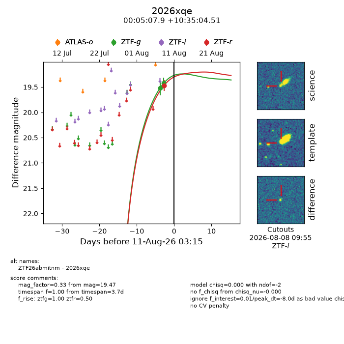
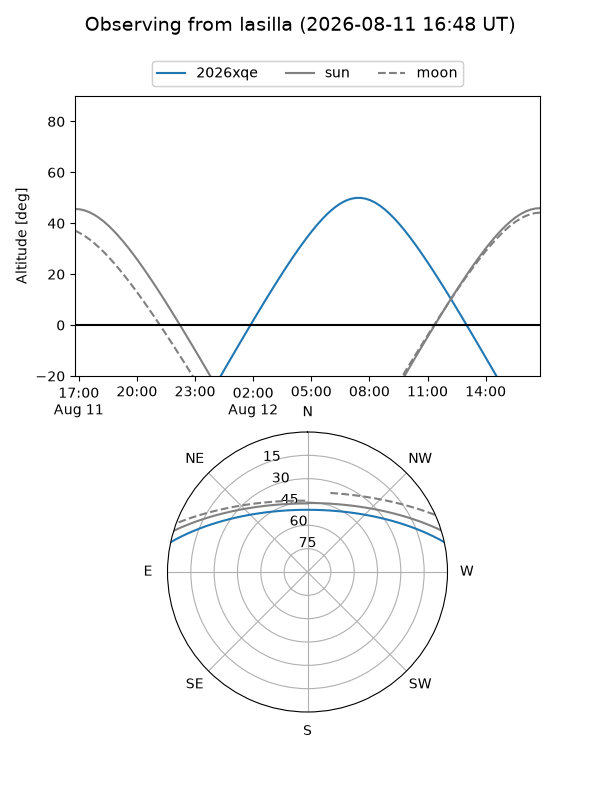
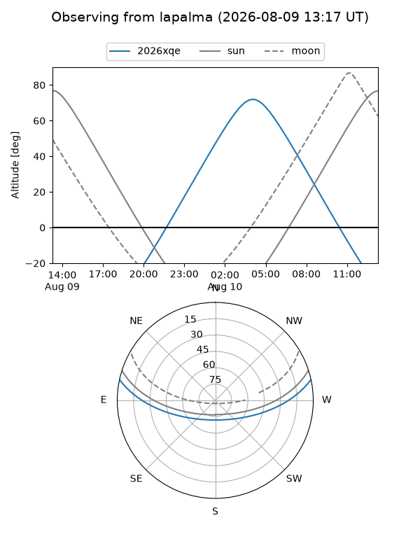
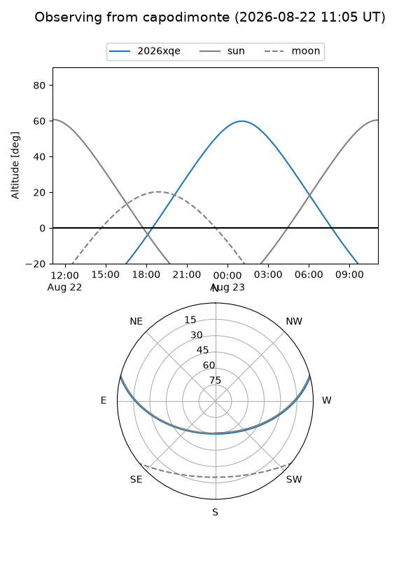
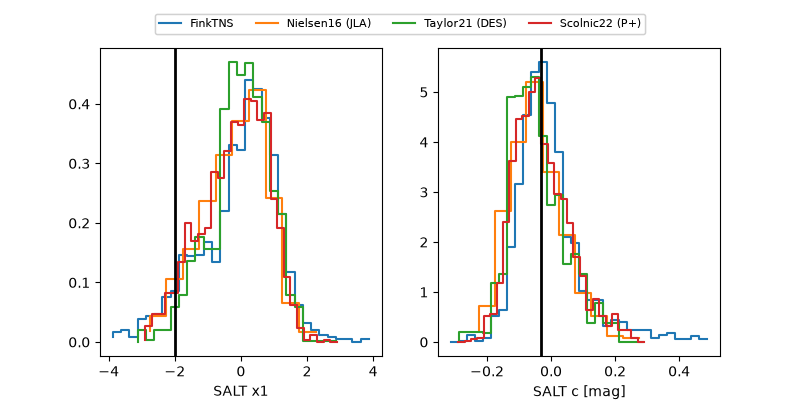

2026xqe
Target 2026xqe at 2026-08-11 03:18
Aliases and brokers:
FINK-ZTF: ztf.fink-portal.org/ZTF26abmitnm
Lasair-ZTF: lasair-ztf.lsst.ac.uk/objects/ZTF26abmitnm
ALeRCE-ZTF: alerce.online/object/ZTF26abmitnm
YSE-PZ: ziggy.ucolick.org/yse/transient_detail/2026xqe
TNS name: wis-tns.org/object/2026xqe
Direct TNS query: direct search
alt names
ZTF26abmitnm (ztf,fink_ztf)
2026xqe (tns,yse)
Coordinates:
equatorial (ra, dec) = 1.2830,+10.58459
equatorial (HMS+DMS) = 00:05:07.92,+10:35:04.51
galactic (l, b) = (104.8057,-50.65027)
Flags:
TNS type: nan
peak dt: -8.0
Photometry:
last ztfg=19.42, ztfr=19.47
2 ztfg, 1 ztfr detections
Lightcurve

Visibility



Additional plots
